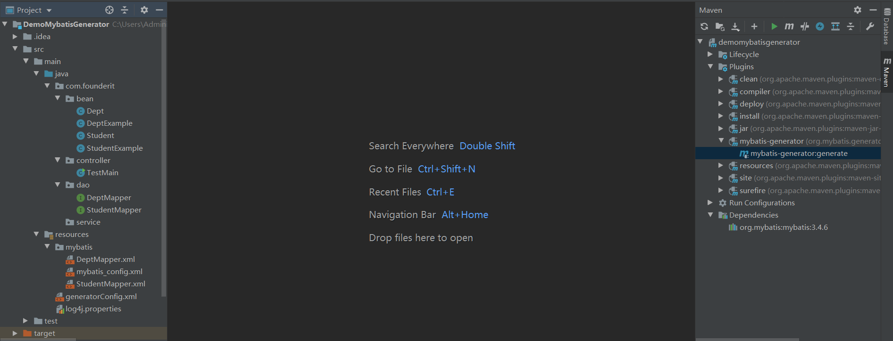
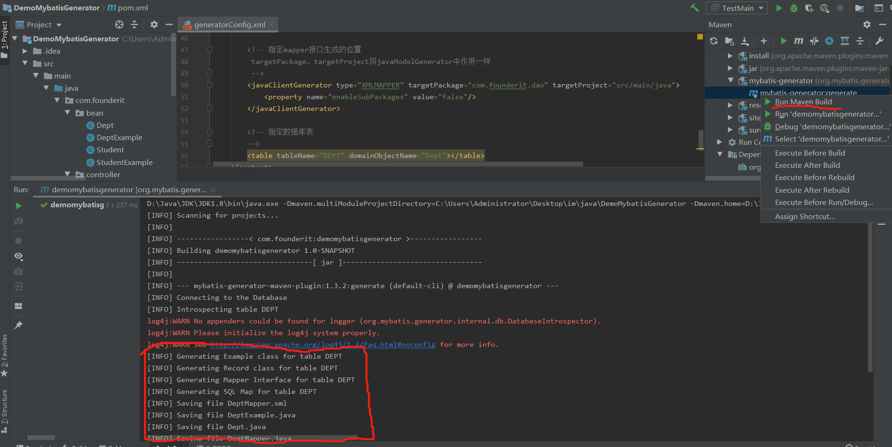
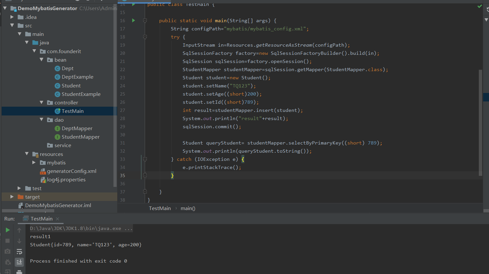

项目结构如下

<plugins>
<plugin>
<groupId>org.mybatis.generator</groupId>
<artifactId>mybatis-generator-maven-plugin</artifactId>
<version>1.3.2</version>
<configuration>
<!--配置文件的位置-->
<configurationFile>src/main/resources/generatorConfig.xml</configurationFile>
<verbose>true</verbose>
<overwrite>true</overwrite>
</configuration>
<executions>
<execution>
<id>Generate MyBatis Artifacts</id>
<goals>
<goal>generate</goal>
</goals>
</execution>
</executions>
<dependencies>
<dependency>
<groupId>org.mybatis.generator</groupId>
<artifactId>mybatis-generator-core</artifactId>
<version>1.3.2</version>
</dependency>
</dependencies>
</plugin><?xml version="1.0" encoding="UTF-8"?>
<!DOCTYPE generatorConfiguration
PUBLIC "-//mybatis.org//DTD MyBatis Generator Configuration 1.0//EN"
"http://mybatis.org/dtd/mybatis-generator-config_1_0.dtd">
<generatorConfiguration>
<!--oracle驱动，由于oracle为收费软件，maven不能直接下载，手动指定位置
-->
<classPathEntry location="D:\Java\Maven\Repository\com\oracle\ojdbc6\11.2.0.3.0\ojdbc6-11.2.0.3.0.jar"/>
<context id="testTables" targetRuntime="MyBatis3">
<commentGenerator>
<!-- 是否去除自动生成的注释,true：是,false:否 -->
<property name="suppressAllComments" value="true"/>
</commentGenerator>
<!--数据库连接的信息：驱动类、连接地址、用户名、密码 -->
<jdbcConnection driverClass="oracle.jdbc.driver.OracleDriver"
connectionURL="jdbc:oracle:thin:@127.0.0.1:1521:orcl"
userId="scott"
password="scott">
</jdbcConnection>
<!-- 默认false，把JDBC DECIMAL 和 NUMERIC 类型解析为 Integer，为 true时把JDBC DECIMAL 和
NUMERIC 类型解析为java.math.BigDecimal -->
<javaTypeResolver>
<property name="forceBigDecimals" value="false"/>
</javaTypeResolver>
<!-- 指定javaBean生成的位置
targetPackage：生成的类要放的包，真实的包受enableSubPackages属性控制；
targetProject：目标项目，指定一个存在的目录下，生成的内容会放到指定目录中，如果目录不存在，MBG不会自动建目录
-->
<javaModelGenerator targetPackage="com.founderit.bean" targetProject="src/main/java">
<!-- 在targetPackage的基础上，根据数据库的schema再生成一层package，最终生成的类放在这个package下，默认为false；如果多个数据库改为true分目录 -->
<property name="enableSubPackages" value="false"/>
<!-- 设置是否在getter方法中，对String类型字段调用trim()方法 -->
<property name="trimStrings" value="true"/>
</javaModelGenerator>
<!-- 指定mapper映射文件生成的位置
targetPackage、targetProject同javaModelGenerator中作用一样-->
<sqlMapGenerator targetPackage="mybatis" targetProject="src/main/resources">
<property name="enableSubPackages" value="false"/>
</sqlMapGenerator>
<!-- 指定mapper接口生成的位置
targetPackage、targetProject同javaModelGenerator中作用一样
-->
<javaClientGenerator type="XMLMAPPER" targetPackage="com.founderit.dao" targetProject="src/main/java">
<property name="enableSubPackages" value="false"/>
</javaClientGenerator>
<!-- 指定数据库表
-->
<table tableName="DEPT" domainObjectName="Dept"></table>
</context>
</generatorConfiguration>
在项目右侧Plugins下选中mybatis-generator，右键运行，在console下查看运行结果

在pom.xml下假如mybayis<dependency>
<groupId>org.mybatis</groupId>
<artifactId>mybatis</artifactId>
<version>3.4.6</version>
</dependency>
新建测试类TestMain

public static void main(String[] args) {
String configPath="mybatis/mybatis_config.xml";
try {
InputStream in=Resources.getResourceAsStream(configPath);
SqlSessionFactory factory=new SqlSessionFactoryBuilder().build(in);
SqlSession sqlSession=factory.openSession();
StudentMapper studentMapper=sqlSession.getMapper(StudentMapper.class);
Student student=new Student();
student.setName("TQ123");
student.setAge((short)200);
student.setId((short)789);
int result=studentMapper.insert(student);
System.out.println("result"+result);
sqlSession.commit();
Student queryStudent= studentMapper.selectByPrimaryKey((short) 789);
System.out.println(queryStudent.toString());
} catch (IOException e) {
e.printStackTrace();
}
}